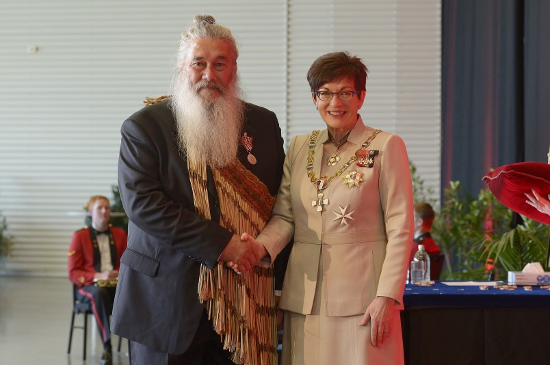
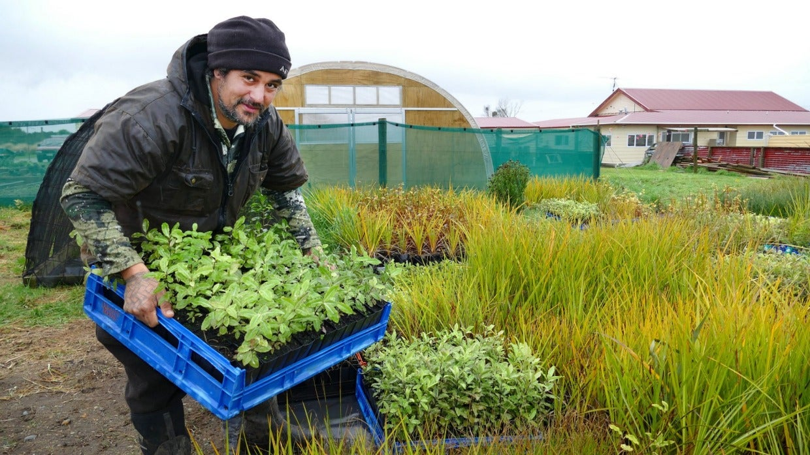
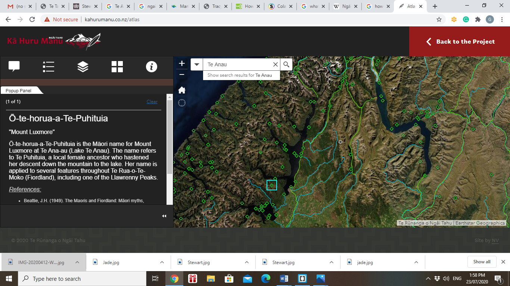
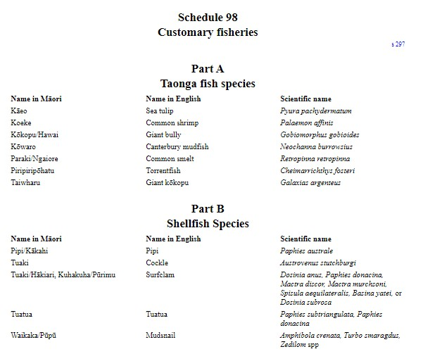
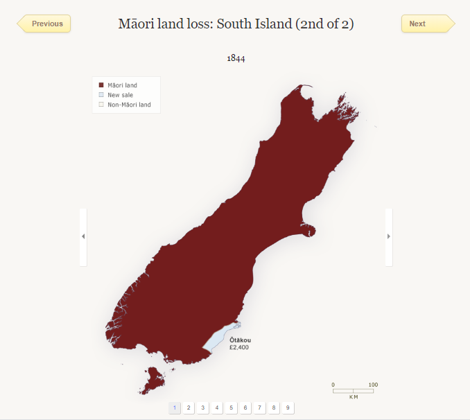

I orea te tuatara ka patu ki waho
A problem is solved by continuing to find solutions
I live in the heart of Fiordland, Te Anau. Te Anau is the gateway to Poipoitahi/Milford Sound as well as Patea/Doubtful Sound and it is part of an rohe known as Murihiku. Te Rūnanga o Ngāi Tahu are the tangata whenua and iwi of this place. Within Murihiku there are four Ngāi Tahu hapu’s that have mana whenua over all ancestral lands in Murihiku. These are:
Central to Māori culture and community activities are marae. Marae are dedicated buildings representing the genealogy and stories of local iwi or people. Marae provide a meeting place for Māori communities for celebrations, bereavements, learning forums and meetings.There are four statutory acknowledged marae's located in Murihiku, these are identified on the map below and listed beneath this map.
Map showing the Location of Statutory Acknowledged Marae in Murihiki
Te Rau Aroha Marae, Bluff
Te Rau Aroha Marae is the world’s most southern marae, located in the small town of Bluff. It was originally established in the late 19th century as a hostel for local Māori who lived on islands off the Southland coast.The marae proper was developed in 1985, but the tupuna whare, Tahu-pōtiki, which takes its name from the ancestor (tupuna) of the local tribe, Ngāi Tahu, was opened in February 2003.Designed by prominent Māori artist, heritage advocate and teacher Cliff Whiting, the wharenui is strikingly contemporary and features the bold colours and rich carvings familiar in Dr Whiting’s work.While the whare’s rounded, octagonal shape is based on whare-rau (leaf covered dwellings utilised by Māori in pre-European times), the building’s whakairo (carving, artwork) are modern in style.Another point of difference from many marae is that female, rather than male, ancestors feature inside the whare. This acknowledges the resilience of a people who survived the threat of invasion from the North and an influx of whalers, sealers and settlers from all parts of the world. Most of the Ngāi Tahu families in Bluff and Southland trace their genealogy from at least one or more of these tupuna wāhine (female ancestors).

In Invercargill the Nga Hau E Wha Society Incorporated has established a Marae and all who have a sense of belonging to Māori culture are welcome. This Marae does not hold statutory acknowledgement from the Crown

Te Ao Mārama Inc. is the organisation that represents Murihiku’s interest in the planning and decision making processes of Local Authorities. It is authorised to represent the four Ngāi Tahu papatipu runanga in Murihiku. It is involved in the protection of the spiritual and cultural values of the region, including wahi tapu, mahinga kai and other natural resources.
Te Rōpū Taiao is a joint management committee that was established in the 1990s to develop relationships between the local authorities and the tangata whenua of Murihiku. The committee primarily deals with higher level decision making concerning environmental resource management within local government. The group, which meets four times a year, is made up of representatives from councils in Southland and Otago and the four papatipu rūnanga in Murihiku.
Kaitaiki Roopu is a group which consists of two representatives from each of the statutory acknowledged maraes in Murihiku. This group meets every 6 weeks with a representative from the Department of Conservation to discuss applications that have been submitted for activities in the Fiordland National Park.
Ngāi Tahu are kaitiaki of Murihiku and have representatives within organisations to reflect this responsibility. Murihiku has aspirational people doing aspriational work. The most notable representative for Murihiku is Stewart Bull who is a member of the Southland Conservation Board and represents the Board on the Murihiku Kaitiaki Roopu. He is a founding member of the Fiordland Marine Guardians and the South West Endangered Species Charitable Trust. He chairs the Titi (Beneficial) Islands Committee and is part of the administering body of the Rakiura Titi Islands Committee. He is Vice-Chair of Oraka Aparima Runaka. He has been on the Board of Pomona Island Trust and was a member of the Whenua Hou Committee. Mr Bull has also worked closely with the Department of Conservation and was an Honorary Fisheries Officer.
Jade Maguire, is a member of the Oraka Aparima Runaka. He is an active member of Murihiku and is working towards utilising Māori knowledge to improve the regions natural environment. Jade has created an eco-learning space at Te Rau Aroha Marae where he grows idigenous plants for restoration initiatives. A lot of Maguire's plants were now alongside waterways on farms to filter out sediment and nutrients before they entering creeks and streams. Maguire is also stepping out into the wider community and has joined forces with the Pourakino Catchment Group to put a game plan in place for increasing plantings and improving water quality in the catchment by working together.
Fiordland is within the rohe of Murihiku. Refer to the map below.
There are many symbols of Ngāi Tahu’s identity in Murihiku, these symbols and their correct ancestral Māori names are identified within the Ngāi Tahu Atlas; http://www.kahurumanu.co.nz/atlas. Refer to the image below and click on the link or image to view Murihiku's ancestrial landscape within this atlas.
Kā Huru Manu Ngāi Tahu Atlas
In Te Anau the following places are identified in this Atlas as places of connection to Ngāi Tahu:

The fiords of this region represent, in tradition, the raised up sides of Te Waka o Aoraki. The waka foundered on a submerged reef and its occupants, Aoraki and his brothers, Rāraki, Rakiroa and others, were turned to stone. They stand now as the highest peaks of Kā Tiritiri o te Moana (the Southern Alps). The fiords at the southern end of the Alps were hacked out of the raised side of the wrecked waka by Tū Te Rakiwhānoa, in an effort to make it habitable by humans. The deep gouges and long waterways that make up the fiords were intended to provide safe havens on the rugged coastline, and stocked with fish, forest and birds to sustain travellers. Schedule 102 of the Ngāi Tahu Claims Settlement Act 1998 details Ngāi Tahu's connection with Te Mimi o Tū Te Rakiwhānoa (Fiordland Coastal Marine Area) in furhter detail, this is included in the sction below.
The Ngāi Tahu Claims Settlement Act 1998
In 1998, after nearly 150 years, Ngāi Tahu completed their efforts to have the Crown address their grievances. They signed a Deed of Settlement that provided compensation valued at $170 million. This confirmed Ngāi Tahu's ownership of pounamu, granted certain rights to sites of significance and allowed them some role in managing conservation estate resources within their boundaries. The Crown also expressed its 'profound regret' and apologised 'unreservedly' for the suffering and hardship it had caused by not honouring its Treaty obligations. The Ngāi Tahu Claims Settlement Act 1998 contains statutory acknwledgements for places of significane to Ngāi Tahu. In the 'planning world' this means that for any proposed activity within areas of statutory acknowledgement Te Rūnanga o Ngāi Tahu must be notified of the proposal and be enabled to participate in the planning and decision making of the proposal as a potentially affected party. The Ngāi Tahu Claims Settlement Act 1998 states that the purpose of statutory acknowledgement is:
Fiordland has four statutory acknowledgements identified in the Ngāi Tahu Claims Settlement Act 1998. These are displayed below.
Ngāi Tahu association with Te Mimi o Tū Te Rakiwhānoa
The fiords of this region represent, in tradition, the raised up sides of Te Waka o Aoraki. The waka (canoe) foundered on a submerged reef and its occupants, Aoraki and his brothers, Rāraki, Rakiroa and others, were turned to stone. They stand now as the highest peaks of Kā Tiritiri o te Moana (the Southern Alps). The fiords at the southern end of the Alps were hacked out of the raised side of the wrecked waka by Tū Te Rakiwhānoa, in an effort to make it habitable by humans. The deep gouges and long waterways that make up the fiords were intended to provide safe havens on the rugged coastline, and stocked with fish, forest and birds to sustain travellers.
For Ngāi Tahu, traditions such as these represent the links between the cosmological world of the gods and present generations, these histories reinforce tribal identity and solidarity, and continuity between generations, and document the events which shaped the environment of Te Wai Pounamu and Ngāi Tahu as an iwi.
Particular stretches of the coastline also have their own traditions. The visit of Tamaahua to Piopiotahi (Milford Sound) in search of Poutini, who had absconded with his wife Waitaiki, is linked to the creation of Pounamu further north on Te Tai Poutini (the West Coast). The koko-takiwai which is found in Piopiotahi has its basis in a visit to Piopiotahi by the waka Tairea. A woman, Koko-takiwai, and her children, known as Matakirikiri, were left behind by the Tairea and were turned into varieties of pounamu.
Place names along the coast record Ngāi Tahu history and point to the landscape features which were significant to people for a range of reasons. For example, in his voyage around the Sounds in the waka Takitimu, Tamatea gave the chiselled terrain the name “Te Rua-o-te-moko”, likening the deep gouges adorning the impressive cliff faces of the fiords to the tattoos on a chief’s face. Martins Bay (Whakatipu-waitai or Kōtuku) to the north of the fiords was the site of an old settlement, located to control the pounamu resources to be found here. An area of Doubtful Sound is known as Kahui-te-kākāpō, while Dagg Sound had a canoe harbour known as Te Rā. Breaksea Island (within Breaksea Sound—Te Puaitaha) is known as Te Au Moana, referring to the ocean current that sweeps around the inlet. Cape Providence is known as Ōrariki, a cliff near here is called Taka-o-te-karehu-Tamatea, referring to an episode when some tattooing ink belonging to Tamatea washed over board. Chalky Sound is known as Taiari and a rock in the Sound is known as Te Kakahu-o-Tamatea, a place where Tamatea had his clothes spread out to dry after being drenched by the salt spray. Preservation Inlet has the name Rakituma.
The area was visited mainly by Ngāti Mamoe and Ngāi Tahu, who had various routes and nohoanga for the purpose of gathering koko-takiwai and manu (birds), particularly the kākāpō. The area played a significant role in the history of conflict between Ngāi Tahu and Ngāti Mamoe, with a number of Ngāti Mamoe taking refuge in the isolation of the fiords in order to escape the unforgiving attitudes of some sections of Ngāi Tahu. The noted rangatira Tarewai from Otago Heads met his end here at the hands of Ngāti Mamoe, having pursued them from the Otago Peninsula to Rakituma. Tarewai and his warriors were successfully ambushed by those they were pursuing, with the result that no one ever returned to Otago from this battle. Te Whare Pā in Rakitimu was the scene of one of the last major battles between Ngāti Mamoe and Ngāi Tahu.
Another dark piece of history occurred at Te Tauraka o te Hupokeka (Anita Bay). Hupokeka and his whānau (family) regularly visited Piopiotahi, travelling from Murihiku to gather koko-takiwai, and staying at a nohoanga in Anita Bay. It was here, in the 1820s, that he and his whānau were slaughtered by sealers in retribution for an incident of which they were quite innocent.
Because of its attractiveness as a place to establish permanent settlements, including pā (fortified settlements), the coastal area was visited and occupied first by Ngāti Mamoe and later by Ngāi Tahu. Through conflict and alliance these two iwi have merged in the whakapapa (genealogy) of Ngāi Tahu. Battles sites, urupā and landscape features bearing the names of tūpuna (ancestors) record this history. Prominent headlands, in particular, were favoured for their defensive qualities and became the headquarters for a succession of rangatira and their followers. Notable pā and nohoanga occurred in many areas on the Fiordland coast including: Milford (Lake Marchant) and Caswell Sounds; Kahui-te-kākāpō (Doubtful Sound), known as the gathering place of the kākāpō, in reference to the gathering of kākāpō meat and feathers which was one of the key reasons that Ngāi Tahu Whānui regularly travelled to the fiords; Dagg Sound gets the sun all day, and consequently is well known as a nohoanga site, it also has a good canoe harbour known as Te Rā; Rakituma is the site of several pā or nohoanga, including one at Matauira and another at Te Whare Pā.
It was the koko-takiwai and kākāpō which primarily attracted Ngāi Tahu to Fiordland. The koko-takiwai is favoured as a softer type of pounamu, more easily shaped into a finer quality of end product. It was therefore particularly sought-after for the making of ornaments, such as hei-tiki. The area also offered many other mahinga kai to sustain parties on their arduous expeditions, including a range of manu (birds), fish and kaimoana resources.
The tūpuna had considerable knowledge of whakapapa, traditional trails and tauranga waka, places for gathering kai and other taonga, ways in which to use the resources of the area, the relationship of people with the coastline and their dependence on it, and tikanga for the proper and sustainable utilisation of resources. All of these values remain important to Ngāi Tahu today.
There are two principal trails linking the Fiordland coast with the rest of Te Wai Pounamu (the South Island). A sea route around the fiords links Piopiotahi to Murihiku, and was the main route by which the koko-takiwai gathered from that end of the fiords was transported. The inland route for transporting koko-takiwai by backpack lay over what is now known as the Milford track, over Ōmanui (McKinnon Pass), down the Waitawai (Clinton River) to the head of Te Ana-au (Lake Te Anau). From there, the pounamu would be transported by mokihi to the head of the Waiau River, and from there down the Waiau to Te Ara a Kiwa (Foveaux Strait). In addition, a trail from Martins Bay, up the Hollyford Valley and over into the Routeburn Valley to the pounamu source at the head of Lake Whakatipu-wai-māori, was commonly used by Tai Poutini iwi, who regularly travelled south via this route to obtain koko-takiwai.
Hence tauranga waka (landing places) occur up and down the coast and wherever a tauranga waka is located there is also likely to have been a nohoanga, fishing ground, kaimoana resource, with the sea trail linked to a land trail or mahinga kai resource. The tūpuna had a huge knowledge of the coastal environment and weather patterns, passed from generation to generation. This knowledge continues to be held by whānau and hapū and is regarded as a taonga. The traditional mobile lifestyle of the people led to their dependence on the resources of the coast.
The fiords are the repository of many kōiwi tāngata, secreted away in keeping places throughout the region. There are also many other wāhi tapu in the area, including examples of rock art in Chalky Sound. Urupā are the resting places of Ngāi Tahu tūpuna and, as such, are the focus for whānau traditions. Urupā and wāhi tapu are places holding the memories, traditions, victories and defeats of Ngāi Tahu tūpuna, and are frequently protected in secret locations.
The mauri of Te Mimi o Tū Te Rakiwhānoa represents the essence that binds the physical and spiritual elements of all things together, generating and upholding all life. All elements of the natural environment possess a life force, and all forms of life are related. Mauri is a critical element of the spiritual relationship of Ngāi Tahu Whānui with the area.
Schedule 29 Statutory acknowledgement for Lake Hauroko
Ngāi Tahu association with Lake Hauroko
Hauroko is strongly associated with urupā in the immediate vicinity, including one on an island in the lake, known to Pākehā as Mary Island. In particular, Ngāti Rakiamoa and Ngāti Ruahikihiki have several traditions about their dead lying in this region.
Urupā are the resting places of Ngāi Tahu tūpuna and, as such, are the focus for whānau traditions. These are places holding the memories, traditions, victories and defeats of Ngāi Tahu tūpuna, and are frequently protected by secret locations. It is because of its proximity to these urupā that Hauroko is considered tapu by Ngāi Tahu.
The mauri of Hauroko represents the essence that binds the physical and spiritual elements of all things together, generating and upholding all life. All elements of the natural environment possess a life force, and all forms of life are related. Mauri is a critical element of the spiritual relationship of Ngāi Tahu Whānui with the lake.
Schedule 45
Statutory acknowledgement for Moturau (Lake Manapōuri)
Ngāi Tahu association with Moturau
Moturau (or Motu-ua) is one of the lakes referred to in the tradition of “Ngā Puna Wai Karikari o Rakaihautu” which tells how the principal lakes of Te Wai Pounamu were dug by the rangatira (chief) Rakaihautu. Rakaihautu was the captain of the canoe, Uruao, which brought the tribe, Waitaha, to New Zealand. Rakaihautu beached his canoe at Whakatū (Nelson). From Whakatū, Rakaihautu divided the new arrivals in two, with his son taking one party to explore the coastline southwards and Rakaihautu taking another southwards by an inland route. On his inland journey southward, Rakaihautu used his famous kō (a tool similar to a spade) to dig the principal lakes of Te Wai Pounamu, including Moturau. Rakaihautu named the lake Motu-ua, a reference to the persistent rain which troubled his party here.
Tamatea and his party passed this way in their journey back to their homeland after their waka, Takitimu, broke its back at the mouth of the Waiau River. It was Tamatea who named the lake Moturau (possibly a woman’s name but more likely to relate to the many islands found in the lake). Tamatea’s party established a camp on the edge of the lake, which is probably under water now, and called it Whitiaka-te-rā (the shining of the sun), indicating that they enjoyed a very different experience of the lake from Rakaihautu. Other traditional names associated with the lake include Te Māui (North Arm), Te Tukeroa (Beehive), Manapōuri (north-eastern reach), Wairoa River (upper Waiau River), Te Rakatū (Garnock Burn), Te Konuotu-te-Makohu (Monument), and Huatea (South Arm).
For Ngāi Tahu, traditions such as this represent the links between the cosmological world of the gods and present generations, these histories reinforce tribal identity and solidarity, and continuity between generations, and document the events which shaped the environment of Te Wai Pounamu and Ngāi Tahu as an iwi.
A number of wāhi taonga and nohoanga associated with the lake are now under its waters. Eel weirs have been found at the Monument and Hope Arm of the lake, and there was a canoe manufacturing site at Pigeon Island. Such wāhi taonga are places holding the memories, traditions, victories and defeats of Ngāi Tahu tūpuna.
As a mahinga kai, the lake was important for the fowling it offered Murihiku coastal settlements in summer. The tūpuna had considerable knowledge of whakapapa, traditional trails and tauranga waka (landing places), places for gathering kai and other taonga, ways in which to use the resources of Moturau, the relationship of people with the lake and their dependence on it, and tikanga for the proper and sustainable utilisation of resources. All of these values remain important to Ngāi Tahu today.
The mauri of Moturau represents the essence that binds the physical and spiritual elements of all things together, generating and upholding all life. All elements of the natural environment possess a life force, and all forms of life are related. Mauri is a critical element of the spiritual relationship of Ngāi Tahu Whānui with the lake.
Schedule 58
Statutory acknowledgement for Te Ana-au (Lake Te Anau)
Ngāi Tahu association with Te Ana-au
Te Ana-au is one of the lakes referred to in the tradition of “Ngā Puna Wai Karikari o Rakaihautu” which tells how the principal lakes of Te Wai Pounamu were dug by the rangatira (chief) Rakaihautu. Rakaihautu was the captain of the canoe, Uruao, which brought the tribe, Waitaha, to New Zealand. Rakaihautu beached his canoe at Whakatū (Nelson). From Whakatū, Rakaihautu divided the new arrivals in two, with his son taking one party to explore the coastline southwards and Rakaihautu taking another southwards by an inland route. On his inland journey southward, Rakaihautu used his famous kō (a tool similar to a spade) to dig the principal lakes of Te Wai Pounamu, including Te Ana-au.
For Ngāi Tahu, traditions such as this represent the links between the cosmological world of the gods and present generations, these histories reinforce tribal identity and solidarity, and continuity between generations, and document the events which shaped the environment of Te Wai Pounamu and Ngāi Tahu as an iwi.
Te Ana-au figures in Ngāi Tahu histories as one of the last places where Ngāi Tahu and Ngāti Mamoe came into conflict after the peace established between Rakiihia and Te Hautapunui o Tū. After Rakiihia had died, his bones were stripped of flesh and were buried in a cave on a cliff facing the seaside near Dunedin. However, a landslip led to the bones being uncovered. The bones were found by Ngāi Tahu fishermen and made into fish hooks, an act designed to insult. Among Māori it was a practice to take the bones of enemy leaders who had recently died, fashion them into fish hooks and present fish caught with them to the enemy as a gift. Once the fish had been eaten, the enemy would be told they had feasted on fish that had in turn feasted on their dead.
While Ngāi Tahu were fishing with their Ngāti Mamoe relations, one of the Ngāi Tahu fishermen referred to the fish biting the bones of Rakiihia. The Ngāti Mamoe fisherman recognised the insult and checked the cave in which their leader had been interred. Finding that the grave had been desecrated, the Ngāti Mamoe found and killed the son of a senior Ngāi Tahu rangatira (chief). Before Ngāi Tahu could retaliate, the Ngāti Mamoe were warned that they should leave the coast for the inland lakes where they would not be found. Ngāti Mamoe headed to Te Ana-au. Among this Ngāti Mamoe party was Rakiihia’s brother, Pukutahi. Pukutahi fell sick along Te Ana-au’s shoreline and rested while his followers explored the lake to find a safer place.
Approaching the lakes, Te Hau, the leader of the Ngāi Tahu party, observed that the fugitives had divided in two, and unfortunately for Pukutahi, decided to follow the trail up to Te Ana-au. The Ngāti Mamoe camp was found and in the morning the chiefs of Ngāti Mamoe, including Pukutahi, were killed. This was to be one of the last battles between the tribes.
The lake was an important mahinga kai in the interior. The tūpuna had considerable knowledge of whakapapa, traditional trails and tauranga waka, places for gathering kai and other taonga, ways in which to use the resources of Te Ana-au, the relationship of people with the lake and their dependence on it, and tikanga for the proper and sustainable utilisation of resources. All of these values remain important to Ngāi Tahu today.
The mauri of Te Ana-au represents the essence that binds the physical and spiritual elements of all things together, generating and upholding all life. All elements of the natural environment possess a life force, and all forms of life are related. Mauri is a critical element of the spiritual relationship of Ngāi Tahu Whānui with the lake.
Schedule 69
Statutory acknowledgement for Waiau River
Ngāi Tahu association with the Waiau
The Waiau River features in the earliest of traditional accounts, and was a place and resource well known to the earliest tūpuna (ancestors) to visit the area. Rakaihautu and his followers traced the Waiau from its source in Te Ana-au (Lake Te Anau) and Motu-ua or Moturau (Lake Manapōuri), to its meeting with the sea at Te Wae Wae Bay.
The waka Takitimu, under the command of the rangatira (chief) Tamatea, was wrecked near the mouth of the Waiau River and the survivors who landed at the mouth named the river “Waiau” due to the swirling nature of its waters. Tamatea and his party made their way up the river to Lake Manapōuri where they established a camp site. The journey of Tamatea was bedevilled by the disappearance of Kaheraki who was betrothed to Kahungunu, a son of Tamatea. Kaheraki strayed away from the party, and was captured by the Maeroero (spirits of the mountain).
For Ngāi Tahu, traditions such as this represent the links between the cosmological world of the gods and present generations, these histories reinforce tribal identity and solidarity, and continuity between generations, and document the events which shaped the environment of Te Wai Pounamu and Ngāi Tahu as an iwi.
The Waiau has strong links with Waitaha who, following their arrival in the waka Uruao, populated and spread their influence over vast tracts of the South Island. They were the moa hunters, the original artisans of the land. There are remnants of Waitaha rock art associated with the river. Surviving rock art remnants are a particular taonga of the area, providing a unique record of the lives and beliefs of the people who travelled the river.
There is also a strong Ngāti Mamoe influence in this area of the country. Ngāti Mamoe absorbed and intermarried with the Waitaha and settled along the eastern coast of Te Wai Pounamu. The arrival of Ngāi Tahu in Te Wai Pounamu caused Ngāti Mamoe to become concentrated in the southern part of the island, with intermarriage between the two iwi occurring later than was the case further north. The result is that there is a greater degree of Ngāti Mamoe influence retained in this area than in other parts of the island. These are the three iwi who, through conflict and alliance, have merged in the whakapapa (genealogy) of Ngāi Tahu Whānui.
Numerous archaeological sites and wāhi taonga attest to the history of occupation and use of the river. These are places holding the memories, traditions, victories and defeats of Ngāi Tahu tūpuna. The main nohoanga (occupation site) on the Waiau was at the mouth and was called Te Tua a Hatu. The rangatira (chief) Te Wae Wae had his kāinga nohoanga on the left bank of the Waiau River mouth.
The Waiau, which once had the second largest flow of any river in New Zealand, had a huge influence on the lives and seasonal patterns of the people of Murihiku, over many generations. The river was a major mahinga kai: aruhe (fernroot), tī root, fish, tuna (eels), shellfish and tutu were gathered in the summer, a range of fish were caught in the autumn, kanakana (lamprey) were caught in the spring, while the people were largely reliant during winter on foods gathered and preserved earlier in the year. Rauri (reserves) were applied to the mahinga kai resources, so that people from one hapū or whānau never gathered kai from areas of another hapū or whānau. Some 200 species of plants and animals were utilised by Ngāi Tahu as a food resource in and near the Waiau.
The tūpuna had considerable knowledge of whakapapa, traditional trails and tauranga waka, places for gathering kai and other taonga, ways in which to use the resources of the Waiau, the relationship of people with the river and their dependence on it, and tikanga for the proper and sustainable utilisation of resources. All of these values remain important to Ngāi Tahu today.
Place names provide many indicators of the values associated with different areas, including Waiharakeke (flax), Papatōtara (tōtara logs or bark), Kirirua (a type of eel found in the lagoon), Te Rua o te Kaiamio (a rock shelter that was a “designated meeting place” for the local Māori, similar to a marae) and Kā Kerehu o Tamatea – (“charcoal from the fire of Tamatea” – black rocks near old Tuatapere ferry site).
The Waiau River was a major travelling route connecting Murihiku and Te Ara a Kiwa (Foveaux Strait) to Te Tai Poutini (the West Coast) and, as such, was an important link between hapū and iwi. Pounamu on the West Coast, and summer expeditions to Manapōuri (Motu-ua or Moturau) for mahinga kai were the main motivations for movement up and down the Waiau. Mōkihi (vessels made from raupō) were utilised for travel down the river and were a very effective and common mode of travel, making transportation of substantial loads of resources possible.
The tūpuna had an intimate knowledge of navigation, river routes, safe harbours and landing places, and the locations of food and other resources on the Waiau. The river was an integral part of a network of trails which were used in order to ensure the safest journey and incorporated locations along the way that were identified for activities including camping overnight and gathering kai. Knowledge of these trails continues to be held by whānau and hapū and is regarded as a taonga. The traditional mobile lifestyle of the people led to their dependence on the resources of the river.
The Waiau was once a large and powerful river, up to 500m across at the mouth, narrowing to 200m further upstream. The water flow from the Waiau River was an important factor in the ecological health and bio-diversity of the coastal resources.
The mauri of the Waiau represents the essence that binds the physical and spiritual elements of all things together, generating and upholding all life. All elements of the natural environment possess a life force, and all forms of life are related. Mauri is a critical element of the spiritual relationship of Ngāi Tahu Whānui with the river.
The Ngāi Tahu Claims Settlement Act 1998 also acknowledges other places of conection to Ngāi Tahu in Murihiku. These are identified below:
Schedule 95 of the Ngāi Tahu Claims Settlement Act 1998 also states sites over which Nohoanga Entitlements are to be granted. The term ‘nohoanga’ (literally meaning a place to sit) traditionally refers to the seasonal occupation sites which were an integral part of the mobile lifestyle of Ngāi Tahu Whānui as they moved around Te Waipounamu in pursuit of food and other natural resources. Nohoanga provides all Ngāi Tahu with an opportunity to experience the landscape as their tipuna did, and to rekindle the traditional practices of gathering food and other natural resources. Planners in Murihiku need to be aware of these sites and seek written approval from Te Ao Marama Inc. for any proposed activity within a Nohoanga site.
Schedule 97 of the Ngāi Tahu Claims Settlement Act 1998 identifies Taonga species that planners should be aware of. In compiling an Assessment of Environmental Effects the planner should consider any potential impact on Taonga species and under the Resource Management Act 1991, if there is likely to be a more than minor effect the proposal is unlikely to be able to proceed.
Tribal origins
Ngāi Tahu trace their tribal identity back to Paikea, who lived in the Polynesian homeland of Hawaiki. To escape being killed at sea by his brother, he came to New Zealand on the back of a whale. Ngāi Tahu share this ancestor with the Ngāti Porou people. One of Paikea’s descendants was Tahupōtiki, from whom Ngāi Tahu take their name. He lived on the East Coast of the North Island.
The move south
From the East Coast, Ngāi Tahu migrated south, first to Wellington, then across Cook Strait to the South Island. This was known as Te Wai Pounamu, the greenstone waters – named after the beautiful and valuable stone found on the West Coast. As Ngāi Tahu moved down the island they fought several battles with two tribes already living there: Ngāti Māmoe and Waitaha. By the end of the 18th century Ngāi Tahu had reached Foveaux Strait at the bottom of the South Island, and occupied the West Coast.
The land
It was not just through warfare that Ngāi Tahu came to occupy much of the South Island. They also mixed with Ngāti Māmoe and Waitaha through marriages with the families of chiefs. They studied and adopted the traditions and history of Waitaha, whose ancestor Rākaihautū is said to have carved out the South Island’s lakes and mountains with his digging stick. Waitaha believed the landmarks surrounding them were their ancestors, and that the winds were related to each other like members of a family.
The wars with Ngāti Toa
In the 1820s and 1830s the powerful chief Te Rauparaha led the North Island tribe Ngāti Toarangatira in attacks on Ngāi Tahu. Armed with muskets, they were seeking revenge for tribal insults and killings. They also wanted to take control of the valuable greenstone in the region. Ngāi Tahu suffered greatly. They survived for three months when Te Rauparaha surrounded their pā at Kaiapoi, but when strong winds caused a fire, the enemy rushed in and killed the people. However, Ngāi Tahu did not lose their territory. On one occasion Ngāi Tahu nearly captured Te Rauparaha himself in a surprise attack from behind a hill at Kāpara-te-hau (Lake Grassmere).
Captain Cook and his crew were the first Europeans to visit Fiordland, and in 1773 spent five weeks in Tamatea/Dusky Sound. Cook’s maps and descriptions soon attracted sealers and whalers who formed the first European settlements of New Zealand. From the middle of the 19th century surveyors, explorers and prospectors began to penetrate the unexplored interior of Fiordland. Preservation Inlet boomed briefly in the 1890s after gold was found, but efforts to establish mines, timber mills and farms in Fiordland have generally been short-lived.
The early settlers to the area were Quintin McKinnon and Donald Sutherland, they opened up the Milford Track in 1889 and began guiding tourists through the now world-famous route. Richard Henry is also well known in Te Anau as he was one of the first pioneers of threatened species. His conservation work was centred around transfering kākāpō and kiwi to islands in Tamatea/Dusky Sound in the late 1890s and early 1900s to protect them from predators.
Ngāi Tahu committed themselves to the Treaty of Waitangi, with its leading chiefs signing at Akaroa, Ruapuke and Ōtākou during 1840. Ngāi Tahu believed that with the treaty would come material benefits. However, one purpose of the Treaty was to facilitate the Crown’s purchase of land from Māori, to sell to settlers or commercial interests. From 1844 to 1863 Ngāi Tahu sold their lands to the Crown in a series of nine purchases. The largest of these was the Canterbury purchase of 1848, negotiated by Henry Tacy Kemp, which saw 20 million acres (about 8 million hectares) sold for £2,000. The other principal transaction was the Otago purchase of 1844: 400,000 acres (about 162,000 hectares)sold for £2,400.
It soon became apparent to Ngāi Tahu that the Crown would not honour the transactions, as they understood them. The tribe believed larger reserves should have been surveyed, their food-gathering places set aside, and schools and hospitals located within the villages.
The first formal statement of Ngāi Tahu grievances about the land purchases was made as early as 1849 by Matiaha Tiramōrehu. In the 1870s, Hōri Kerei Taiaroa began the pursuit of the Ngāi Tahu claim in Parliament. Subsequently almost every Ngāi Tahu leader until the 1990s was active in the cause.
Canterbury Ngāi Tahu understood that the hinterland had not been sold. It was this belief which inspired the prophet Te Maihāroa in 1877 to lead a party to Te Ao Mārama (Ōmārama) in the upper Waitaki basin, asserting a claim on the summer fowling grounds. Local sheep-run holders put pressure on the government, and in 1879 Te Maihāroa was forced from the interior of the South Island down to the coast.
Map Showing Ngāi Tahu's Loss of Land (click to view)
Pursuing the claim
Besides the ongoing petitions to Parliament and Queen Victoria, Ngāi Tahu sought redress in the Native Land Court in 1868, and before a series of royal commissions, in particular the 1879 Royal Commission headed by Francis Nairn and Thomas Smith. The interim report of this commission found that larger reserves should have been set aside. However, no action was taken and the commission’s funds were cut.
In 1986, Rakihia Tau filed the Ngāi Tahu claims with the Waitangi Tribunal. Negotiations between the Crown and Ngāi Tahu on the claims began in 1991, after the release of the tribunal’s Ngāi Tahu Land Claims report.
The negotiations which began in 1991 were suspended unilaterally by the Crown in 1994. Ngāi Tahu then sought and won court orders against the Crown, securing orders to prevent the sale of Crown-owned land and other Crown assets in the South Island. The Court ruled such assets had to be preserved for potential use in any settlement reached between the parties.
Following the intervention of the then Prime Minister, Mr Jim Bolger, negotiations were resumed in 1996. They led to the signing of the non-binding Heads of Agreement on the 5th of October 1996, then the signing of the Deed of Settlement at Kaikōura on the 21st November 1997, and the passage of the Ngāi Tahu Claim Settlement Act on the 29th September 1998.
Ngāi Tahu received cultural redress in the form of confirmation of the ability for Ngāi Tahu to express its traditional kaitiaki relationship with the environment, tribal redress, an apology from the Crown, acknowledgement of the role of our taonga Aoraki and economic redress in the form of a payment of $170 million plus the ability to purchase property from the Crown.
This financial acknowledgement has allowed the tribe to establish itself within the South Island. Today, Ngāi Tahu has interests in fishing and tourism, all of which are managed through Ngāi Tahu Holdings Ltd.
In post colonial New Zealand Ngāi Tahu has been statutory acknowledged as an iwi which includes several hapu within each rohe. To work within the bounds of post colonial New Zealand the hapu of each rohe have connected together to form entities to act as kaitiaki for their whenua and people. In Murihiku Ngāi Tahu have established that the planning and decision making processes should be addressed using the tools identified below. Ngāi Tahu must be connected with when a proposal may impact a statutory acknowledged area (these areas are detailed in the section above) or if a 'trigger' item appears in an application which have been identified by Ngāi Tahu as a topic they want to be consulted on. Ngāi Tahu are also contacted by applicatants for resource consent applications and the Department of Conservation on other matters that they think Ngāi Tahu may want involvement in.
The Plan provides a living, working document that assists Ngāi Tahu ki Murihiku to effectively participate in natural resource and environmental policy and planning. It enables council to ensure iwi issues and policies are provided for in planning documents and determines the nature and extent of consultation required, with respect to specific activities or areas of importance.
When compiling a resource consent application within Murihiku Te Tangi a Tauira is detailed by the applicant under the legislative framework. In developing this Iwi Management Plan, Ngāi Tahu ki Murihiku articulated a vision for Fiordland. The vision sets the policy direction for this section of the Plan.
Vision for Fiordland
Te Ao Mārama Incorporated looks after manawhenua interests in resource management and other aspects related to local government in Southland. It is authorised to represent the four Ngāi Tahu papatipu runanga in Murihiku/Southland. It is involved in the protection of the spiritual and cultural values of the region, including wahi tapu (sacred places), mahinga kai (gathering of food and resources) and other natural resources.
In March 2016 a Charter of Understanding was established between Te Ao Mārama Inc. and the following organisations:
The Charter sets out the basis and conduct of the councils and rūnanga in the context of the Local Government Act 2002 and Resource Management Act 1991, and provides the basis for Ngāi Tahu to contribute to the decision-making process via Te Rōpū Taiao (detailed below). This charter states that Te Ao Mārama Inc. is the organisation that individuals and groups must approach when seeking written approval of Ngāi Tahu for resource consent applications. Stevie-Ray Blair is the contact and liaison person for this organisation, she meets with rūnanga representatives on a monthly basis to discuss resource consent applications that have come to Te Ao Mārama Inc.
Te Rōpū Taiao is a joint management committee established in the 1990s to develop relationships between the local authorities and tangata whenua of Murihiku. The committee primarily deals with higher level decision making concerning environmental resource management within local government. The group, which meets four times a year, is made up of representatives from councils in Southland and Otago and the four papatipu rūnanga in Murihiku.
Kaitiaki Roopu is a group which consists of two representatives from each of the statutory acknowledged maraes in Murihiku. This group meets every 6 weeks with a representative from the Department of Conservation to discuss concession applications that have been submitted for activities in the Fiordland National Park.
Ngāi Tahu in Murihiku are leaning in as kaitiaki and are working to connect all persons who reside in the place the opportunity to learn about and connect with Māori culture, history and language. Ngāi Tahu have accomplished this through:
Ngāi Tahu have been disconnected from their whenua since the signing of the Treaty of Waitangi 1840. The eurocentric world view of colonial settlers meant that Ngāi Tahu have not been able to act as rangatira and kaitiaki of their land as they should have been. Ngāi Tahu have had their land sold, a British common law and legislative law system inacted that did not / still does not always fully recognise the rights of tangata whenua in New Zealand, and they have had their language and culture put to the side. My primary school Te Reo teacher informed me that in the 1950's children were punished for speaking Te Reo at school and English language was encouraged.
In the planning and decision making frameworks of Aotearoa, such as the Resource Management Act 1991 Māori have been provided rights to be involved in the management of their whenua, however this has not been to the extent that was expected under the Treaty of Waitangi. Further, the management of Aotearoa's natural resources has not always been to an appropriate standard, such as, the mauri of our waterways. This has created a further disconnect for Ngāi Tahu and to work towards making right of past mistakes Ngāi Tahu are leaning into the political realm to ensure that Aotearoa's whenua and people will be looked after for furutre generations to come. This is detailed in the section below.
Bennett (2020), explained that use rights are a form of politics. Bennett (2020) detailed that Durie (1994) stated that for Māori to be able to express use rights they must:
In Fiordland, Murihiku Ngāi Tahu use rights have been acknowledged in the The Ngāi Tahu Claims Settlement Act 1998 within the Fiordland National Park, the Coastal Marine Area of Fiordland and within an area of integrated management (Southland District Council, Environment Southland, LINZ) of which the Waiau River flows through. This use right means that Ngāi Tahu must be involved in the following policitcal decsions and frameworks:
Ngāi Tahu's acknowledged use right does not enable Ngāi Tahu in Murihiku rangatira or kaitaiki of this whenua to the level that is enabled on the Tītī Islands. As stated in the Ngāi Tahu Claims Settlement Act 1998 Statutory Acknowledgement in these area's only enables Ngāi Tahu weighting in the decision making procss regarding what activities can occur within these places. The approval of Ngāi Tahu for activities in the Fiordland National Park has created conflict between hapu's. This is becasue in the past only Ōraka Aparima Rūnaka were consulted on applications for activities, however Te Runaka o Awarua, Hokonui Rūnanga and Waihōpai Rūnaka became aware of the consultation process and asked to be included. As a result of this Kaitaiki Roopu was formed. This group includes two representatives from each Rūnanga in Murihiku and they meet with the Department of Conservation every 6 weeks to discuss applications for activities in the Fiordland National Park that set off a 'trigger' identified by the Kaitaiki Roopu. Below are snapshots of other wider political issues to be aware of when working in Murihiku.
The Department of Conservation (DOC) decided to pause the national park review process so the implications of the landmark Ngāi Tai decision can be worked through. The Auckland iwi (Ngāi Tai) argued that DOC did not properly give effect to section 4 of the Conservation Act, which relates to principles of the Treaty of Waitangi, when granting concessions for commercial activities on Motutapu and Rangitoto. The Supreme Court found that decisions to grant concessions to third parties would need to include asking whether the concession opportunities should be preserved for the economic benefit of Ngāi Tai and whether there was any basis for the preferential grant of concessions to Ngāi Tai. This decision means that it is important that DOC understands what the decision means for Ngāi Tahu's wishes regarding use of the Fiordland National Park before they proceed with the review process for the Fiordland National Park Management Plan.”
The Marine and Coastal Area (Takutai Moana) Act 2011 provides a legal framework for iwi, hapu and whanau interested to be recognised in the marine and coastal areas around New Zealand. It gives groups the chance to obtain Customary Marine Title, which recognises that the group has an interest in a specific area of the coast and gives the group certain rights. There are four Customary Marine Title applications for coastal waters in Southland, lodged with the High Court. Refer map below.

All prospective applicants for resource consents for coastal activities in Southland must, before making the resource consent application to Environment Southland: Identify which iwi groups have applied for Customary Marine Title in the area affected by the resource consent application, notify the iwi groups and 'seek their views' on the application, provide with the consent application any views expressed by the iwi groups. Environment Southland will consider the views of the Customary Marine Title group when making decisions on coastal resource consent applications.
If Customary Marine Title is awarded to these groups activities requiring a resource consent will not be able to be undertaken unless an 'RMA permission right' has been obtained from the group.
Ngāi Tahu have authority under the Fisheries Act 1996 to control recreational fishing activities if they are concerned about the habitat or fish stock of the Coastal Marine Area of Fiordland. This Act provides Ngāi Tahu with some tools to utilise as kaitiaki of the area.
Taiāpure are areas that have customarily been of special significance to iwi or hapū, as a source of food, or for spiritual or cultural reasons. They can only be established in estuarine or coastal waters. All types of fishing: commercial, recreational and customary are allowed in a taiāpure, unless its management committee recommends changes to the fishing rules and the Minister of Fisheries approves them.
Role of the management committee.
When a taiāpure is established, the local Māori community nominates people for the management committee. The committee is appointed by the Minister of Fisheries, after consultation with the Minister for Māori Development.
The management committee can provide recommendations to the Minister of Fisheries for regulations (under the Fisheries Act) to manage taiāpure fisheries, relating to:
Proposed taiāpure require public consultation and a tribunal hearing by the Māori Land Court. Part 9 of the Fisheries Act details the process for proposing and establishing a taiāpure.
Temporary closures and restrictions on fishing methods recognise and provide for tangata whenua customary fishing rights and management practices. Temporary closures apply to everyone and may close a fishery for up to 2 years.
Establishing a temporary closure
Anyone can request a temporary closure but the legislation was designed for customary use. To be approved, a temporary closure must be supported by tangata whenua.
Sections 186A and 186B of the Fisheries Act outline the process for establishing a temporary closure. To date Ngāi Tahu have not authorised their right to undertake the above measures but as recreational fishing in putting pressure on the Coastal Marine Area of Fiordland these measures we explained by Stewart Bull as options that could be invoked at a Fiordland Marine Guardians Meeting I attended last year.
In Fiordland, Murihiku I am a Pākehā working in planning. My role creates influence on planning frameworks because I create submissions on these documents. My words may influence the outcome of a planning and decision making process on an application because I have knowledge on how to apply for concession and consent applications. Person's who have influence on the way New Zealanders are able to use the countrys environment, as well as, the development of our future society must take responsibility and be accountable for this role. I must make sure that I am acting responsibly and acting in good faith towards Ngāi Tahu and their planning frameworks, because it is also my role to ensure that the principles of the Treaty of Waitangi are being given effect to.
My place and contribution in Murihiku as a planner is to be able to comprehend Te Tangi a Tauira, liase with Te Ao Marama Inc. and support the Department of Conservations liasons with Kaitiaki Roopu; to ensure that an application is not in conflict with Ngāi Tahu's values for this place. It is my role to remember Ngāi Tahu's preferences towards applications, such as, durations for Resource Consents and ensure that applications align with these. As stated by Jacinta Ruru: only Māori can and should speak for Māori. Therefore, my place is to listen to Te Ao Marama Inc. and Kaitiaki Roopu and work to with Ngāi Tahu to achieve their desired outcomes. I think that dependng on my job in planning that it may also be my role to build and maintain positive relationships with Ngāi Tahu. I may need to look towards proposing joint projects that enable the organisation that I work for to begin building positive relationships with Ngāi Tahu in Murihiku. I must be respectful of what Ngāi Tahu percieve as tikanga for building a relationship and I must follow Ngāi Tahu's chosen protocols for the development of a relationship.
I currently operate under guidance from my mentors. I operate with an openess and a willingness to learn to ensure that my professional development and practice is to a high standard. I am working to continually develop and improve my knowledge base through Massey Univesity to enhance my over all professional performance. I acknowledge that I must learn from and listen to those with more expereience than I because this knowledge is valuable. I have found that it is when I can combine my academic learning and my expereince based learning that I develop in my role and improve my overall work performance.
My own thinking and practice is simply: the more that you learn the more that you realise how little you know. I have knowledge of Māori history in relation to the signing of Treaty of Waitangi and the consequent land wars in New Zealand and I have taught this history to secondary school students in New Zealand. As I child growing up I was often an informal guest on maraes for friends events. For my career in planning, I need to gain a deeper understanding of the consequences of the failure of the Crown to respect the Treaty; in order to be able to comprehend how this has affected Ngāi Tahu in Murihiku. I need to understand how the currently proposed legislations changes (Resource Management Review and the awarding of Customary Marine Title) will enable Ngāi Tahu to act as rangatira and kaitiaki as the Treaty intended. I also need to gain a deeper understanding from Te Ao Marama Inc. on what they think planners need to do to advocate for Ngāi Tahu in Murihiku. I need to continue to learn about Māori planning and put Māori use rights and tikanga at the forefront of my mind when working in an place that is of statutory acknowledgement or importance to Ngāi Tahu. I need to be able to engage effectively in a formal marae setting and be able to comfortably state my pepeha in this situation. I need to support the aspriations of Ngāi Tahu in Murihiku in my work. I must ensure that my practice is giving effect to the Treaty of Waitangi principles, such as engagement in the planning and decision making process with Ngāi Tahu requests being met. I need to be open, willing to listen and hear what is being said. I then need to be willing to act on this infomation in my work as a planner in this place. I need to be a positive advocate for Ngāi Tahu in Murihiku.
My desire to be a positive advocate for Ngāi Tahu within planning for Murihiku is due to two main factors.
Becasue of the aforementioned, I need to develop to be a positive advocate for Ngāi Tahu in Murihiku.